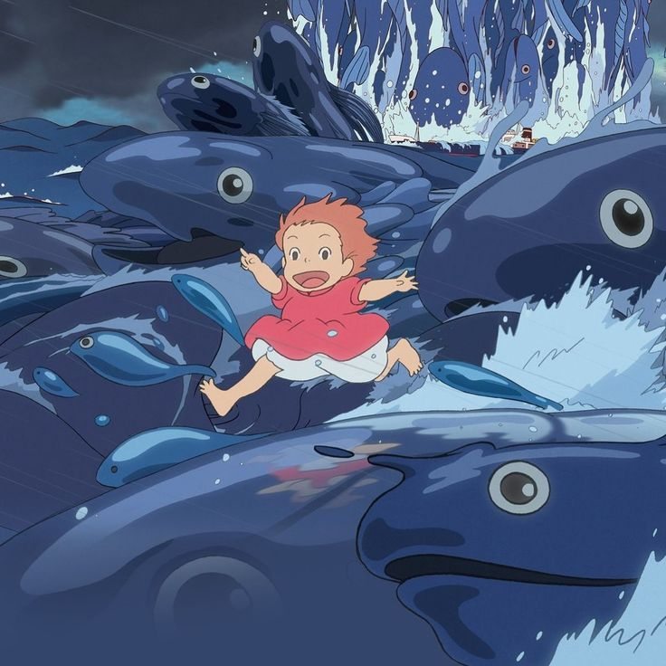

Aspectos generales.✮
En promedio, la profundidad de los océanos es de alrededor de 3800 m de profundidad.
Más sobre el océanoEn promedio, la profundidad de los océanos es de alrededor de 3800 m de profundidad.
Más sobre el océanoEl fondo del océano no es plano, ya que existe una gran cantidad de accidentes geográficos similares a los que se encuentran en los continentes, como lo son las cordilleras, montañas, volcanes, fosas, etcétera.
Más sobre morfologíaEstos son restos esqueléticos calcáreos y las secreciones de los corales y ciertas algas.
Más sobre los arrecifes